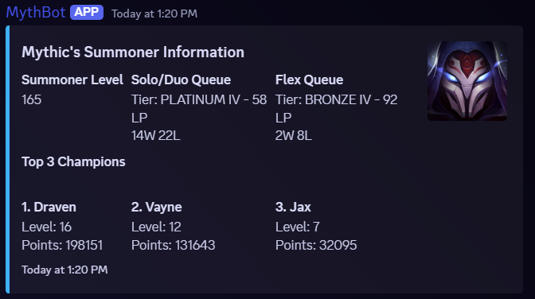
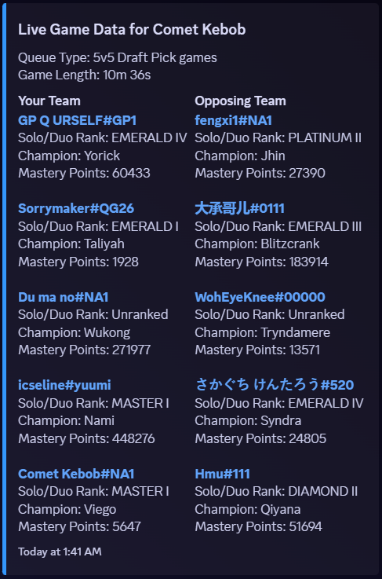

Projects
MythBot: A Discord Bot for League of Legends
MythBot is a JavaScript-powered Discord bot, developed with the Discord.js framework, that connects with the Riot Games API to provide League of Legends account management and data directly to Discord servers. Its features include player rank and champion mastery displays, server leaderboards, live game information with op.gg links, and the ability to create and auto-balance custom lobby queues. Hosted on Railway.



Naive Bayes Spam Filter
A Python-based web application hosted on Heroku that uses the Naive Bayes classifier to filter spam emails. It processes text files and determines the likelihood of them being spam using a pre-trained model from the Enron Spam Dataset.